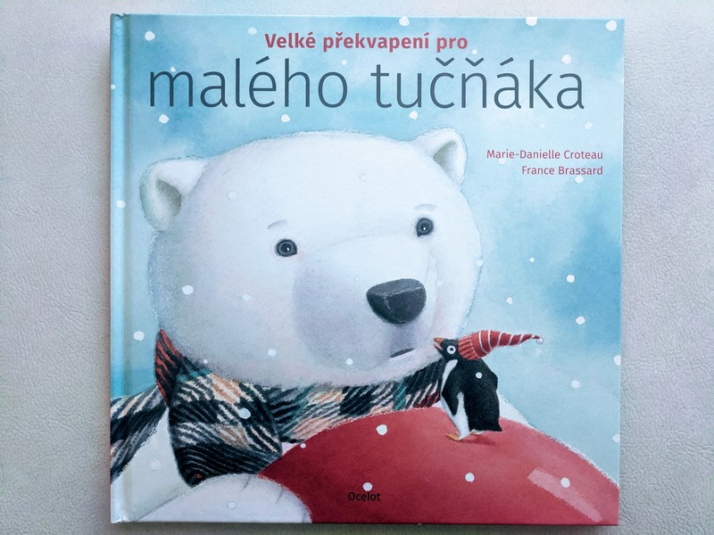
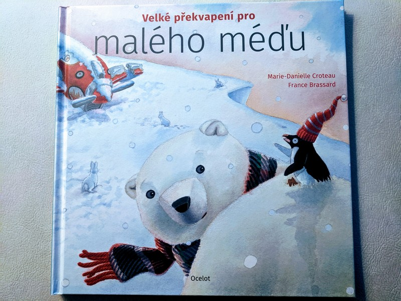

Už delší dobu mám rozepsaný obsáhlejší článek o Olího nejoblíbenějších dětských knížkách, ale stále nemůžu najít čas k jeho dokončení. Dnes to tedy bude zatím o dvou knižních novinkách, které nám v rámci spolupráce zaslalo naše oblíbené knihkupectví Megaknihy.cz
První z nich se jmenuje Velké překvapení pro malého tučňáka od francouzské autorky Marie-Danielle Croteau. Kniha na první pohled zaujme svým formátem (myslím, že je to zatím největší publikace v naší dětské knihovničce :D) a půvabnými ilustracemi, jejichž autorem je France Brassard. Ty zde hrají jednoznačně prim, na každé stránce je jen minimum textu, což je pro mrňousky okolo dvou let, kteří ještě neudrží moc dlouho pozornost, ideální. Příběh samotný mě osobně příliš neoslovil, a to ani po obsahové ani po stylistické stránce. Méďa s tučňákem se během sněhové bouře ztratí svým rodičům a od té doby jsou nerozlučnými přáteli. Následuje zcela nesouvisející zápletka s lodí, která ve vodě zanechá bójku a dva kamarádi přemýšlí, k čemu by ten předmět mohl sloužit. Kniha nekončí žádnou zajímavou pointou a nedozvíme se z ní ani (jak by jeden očekával), zda kamarádi nakonec naleznou svoje ztracené rodiče. Celkově mi tam chybí nějaké rozuzlení nebo aspoň moudro, které by si z knihy mohl malý čtenář odnést. Krom toho mi přijde, že autorka volí jazyk a slovní obraty, které nejsou úplně přizpůsobeny dětskému čtenáři (např. výrazy jako “stvoření”, “uvrhnout do temnoty” a podobně). Netvrdím, že je to špatně a sama nerada malé čtenáře podceňuju, jen mě to zde trochu překvapilo.

Příběh dvou kamarádů má pokračování v podobě knihy Velké překvapení pro malého méďu od stejné dvojice autorů. Těšila jsem se tedy, že se dozvíme, jak to s tučňákem a medvídkem bude dál. Druhá kniha má mnohem zajímavější zápletku i “morální přesah” - na ledovci ztroskotá letadlo s několikačlennou posádkou. Zvířátka se nejprve bojí, nicméně méďa se nakonec rozhodne lidem pomoci… Přestože se ani z této knihy nedozvíme, zda medvídek s tučňákem naleznou své ztracené rodiče, příběh se mi líbil mnohem víc a Olího také více zaujal.

Byť mám k oběma publikacím jisté výhrady a nejsou úplně podle mého gusta, po grafické stránce jsou knihy opravdu krásné a Olí je poslední dobou často vytahuje z knihovničky a rád si v nich listuje. A to je nakonec to hlavní :-)